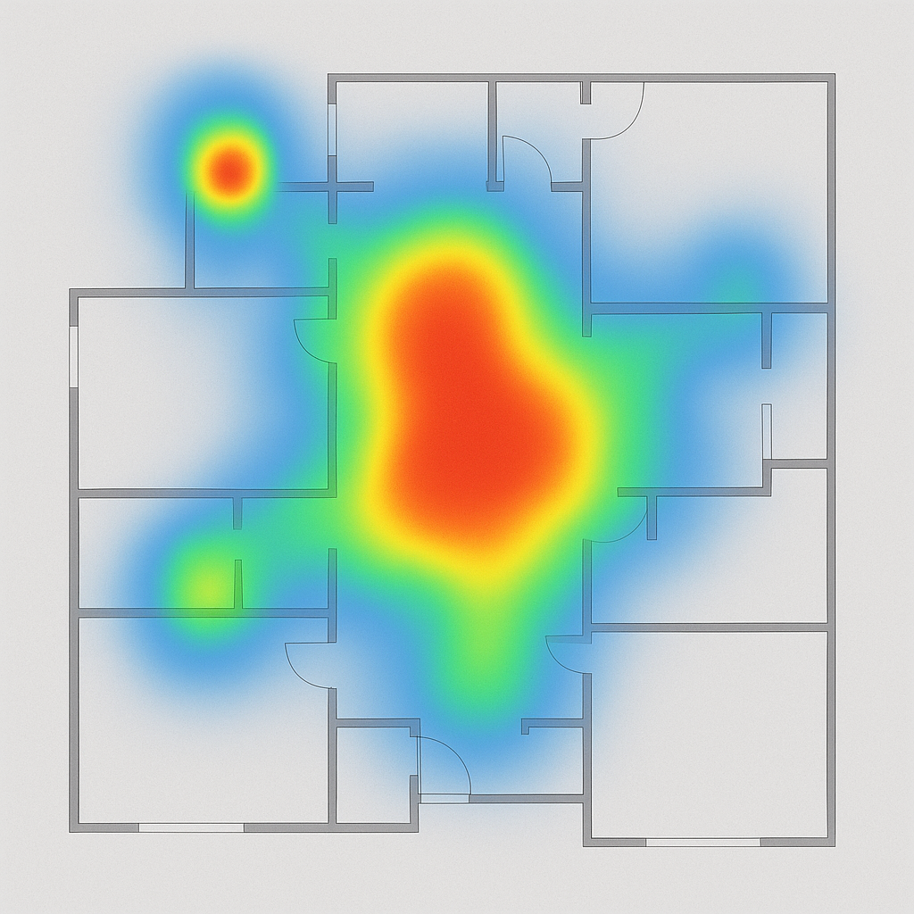
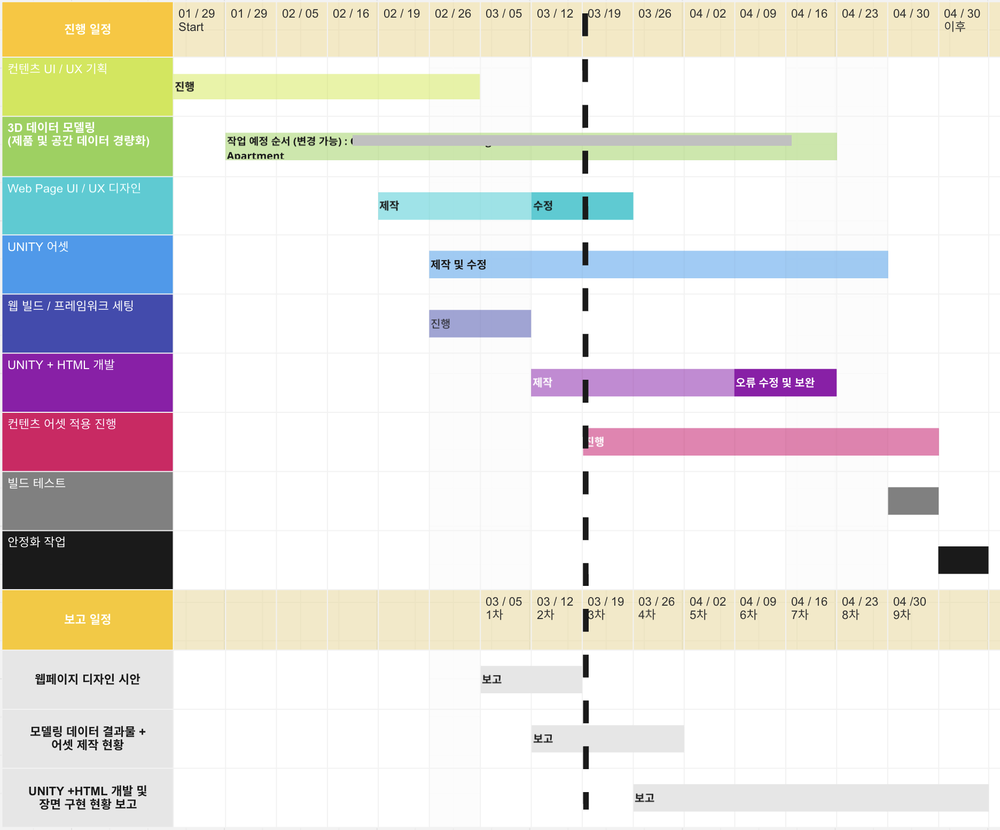

Problem
Unity-based HVAC visualization: Performance bottlenecks (slow loads, user drop-offs) from high-res assets. Lack of behavioral data blurred UX direction. Critically, design (fidelity) and engineering (performance) expectations clashed, hindering project progress.
Action
- Product & Technical Bridging: Translated client requirements into technical specs for Unity dev team; ensured clear communication.
- Behavioral Data Analysis for Optimization: Led Python-based analysis (heatmaps of clicks/dwell time); strategically lowered texture resolution in underused 3D areas for loading speed.
- Stakeholder Alignment & Transparency: Created real-time Miro dashboard for client feedback, issues, and progress; ensured transparency and team alignment.
- Data-Informed Design Trade-offs: Balanced design aesthetics and system performance using structured data analysis; optimized Unity scene configuration.

Figure 01: Heatmap Analysis of User Behavior on Virtual Showroom (example)

Figure 02: Real-time Project Progress and Issue Tracking (Miro Board)
Result
- Increased User Engagement & Lead Generation: +100% visitor growth; +15% session duration.
- Improved Technical Performance: 20% faster page load time; reduced bounce rates, improved user satisfaction.
- Enhanced Cross-Functional Collaboration: Reconciled conflicting stakeholder expectations via data; efficient, harmonized project execution.
Tech Stack & My Role
- Google Analytics (GA): Directly analyzed key metrics to identify problems and quantitatively measure improvement.
- Python (Data Analysis): Interpreted the tech team's Python analysis results (e.g., heatmaps) to propose data-driven optimization strategies.
- Unity / C# (3D Development): Coordinated with the dev team on the technical feasibility of data-driven optimizations and managed execution.
- Miro (Collaboration): Built and operated a real-time dashboard to manage stakeholder communication.
Live Project: HERE